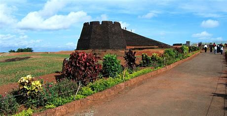
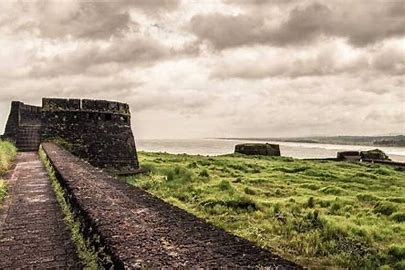
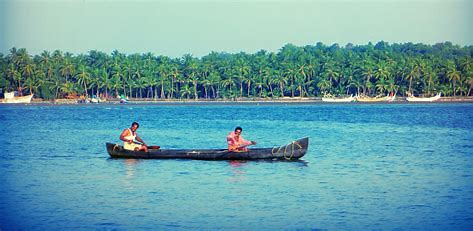

Kasaragod is one of the districts in the northern tip of Kerala. Kasargod is surrounded by Kannur district in the south, Mangalore in the north, Western Ghats in the west and Arabain Sea in the east. Like other districts of Kerala, Kasaragod district too has a high literacy rate, around 85.17%. The district has got mixed culture and is highly influenced by the neighbouring states. The Malayalam spoken here has influences from Tulu, Kannada Urdu, Konkani etc. Kasaragod has enchanting beauty and is a land of historical importance. The district is home to the most fascinating forts, rivers, hills and beautiful beaches. The fort at Bekal is the largest and best preserved fort in the state.
  